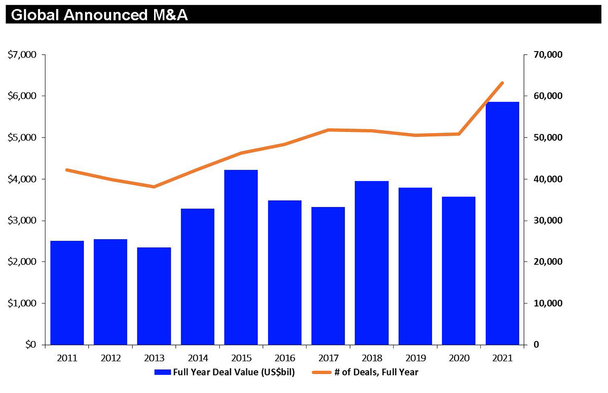
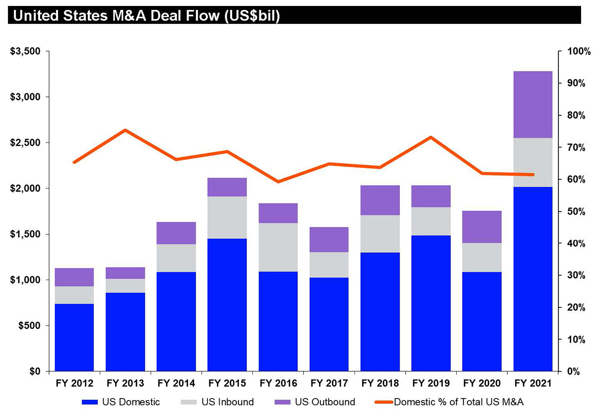
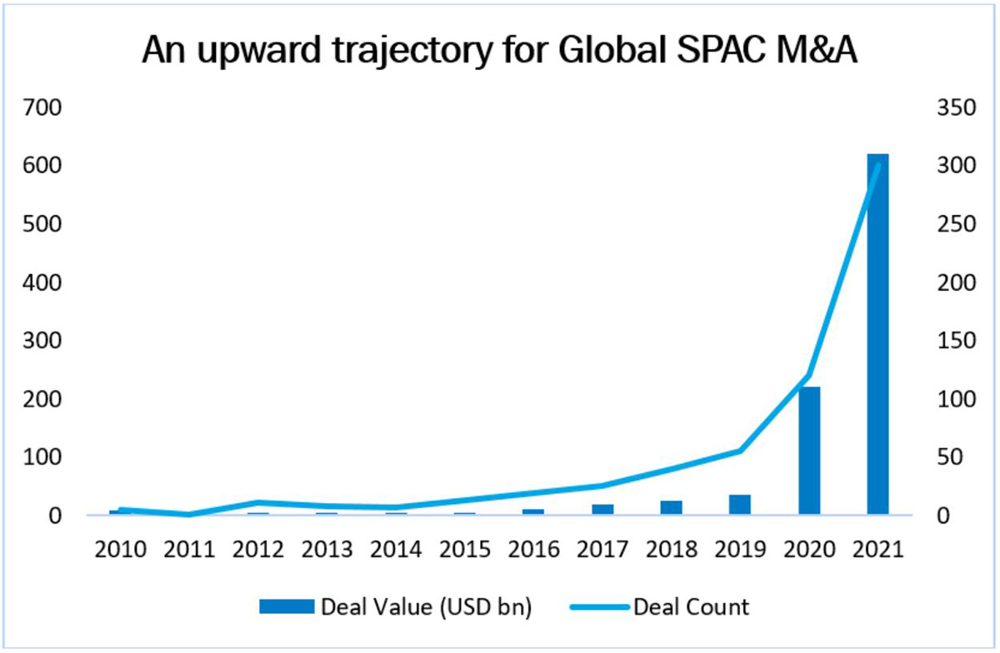

2021 M&A smashed U.S. and global records. The year saw the arrival of a new U.S. administration, the release of COVID-19 vaccines, as well as continued questions regarding the impact of the pandemic, including the year-end Omicron surge, the impact of supply chain shortages, and the onset of inflation. Dealmakers faced increased antitrust, foreign investment and other regulatory pressures, potential changes in financing markets and tax rules, and other challenges (including their own capacities in the face of record workloads). Shareholder activism continued to rebound, frequently complicating, and sometimes encouraging, deals. Deal terms continued to evolve in response to these and other developments.
But the economy grew, equity markets rose, financing was available at low rates, and dealmakers proved resilient, driving M&A activity, despite some tapering off in Q4, to new heights that are widely predicted to continue well into 2022.
In this alert, we review the M&A markets in 2021 and major trends that will impact deal making in 2022.
In 2021, global M&A volumes reached $5.9 trillion in value – a 64% increase compared to 2020 and the strongest annual period since Refinitiv began tracking M&A in 1980.

Source: Refinitiv
Big ticket M&A grew, with deals valued at more than $10 billion tallying a 30% increase in aggregate value, according to Refinitiv. But the overall market was driven more by the 115% increase in aggregate value of deals between $1 billion and $5 billion.
In addition, global cross-border activity grew by 68% to $2.1 trillion, with U.S. outbound activity accounting for about one-third of the value of cross-border transactions.
In the U.S., acquisitions of U.S. targets grew by 82% over 2020, according to Refinitiv, reaching $2.6 trillion. U.S. deal activity accounted for 44% of overall worldwide M&A activity.

Source: Refinitiv
Deal activity, particularly in the U.S., was driven in part by special purpose acquisition companies (SPACs), which accounted for over $616 billion in transaction value in 2021, according to Dealogic. Over 30% of respondents from our 2021 Tech M&A Survey had participated in a tech M&A deal in the past 12 months that involved a SPAC, including 49% of North American respondents.
After a SPAC IPO boom to start the year, activity backed off in the second half of 2021. But appetite remains strong, with just under half of our survey’s respondents considering transacting with a SPAC for 2022.

Source: Dealogic
The technology sector once again dominated global M&A activity, with tech and non-tech companies around the world looking for growth in or through technology. In the U.S., tech accounted for 30% of total deal value, according to Dealogic. A large majority (78%) of respondents to our 2021 Tech M&A Survey predicted that tech M&A volumes would continue to increase into 2022. Respondents pointed to cloud technology as the tech sector with the most transactional opportunity.
Private equity continued its acquisition spree, accounting for 27% of worldwide M&A activity by value, according to Dealogic. Similar to global M&A activity, technology dominated PE deal activity, accounting for 22% of PE deals in 2021, followed by telecom and real estate.
Learn more about Morrison & Foerster’s Global M&A Practice.
Antitrust scrutiny of M&A activity ramped up significantly in 2021, with the Biden White House implementing dramatic changes to domestic antitrust policy and U.S. and global agencies reacting with broader and more aggressive investigations and enforcement. In 2022, companies must be prepared to address potentially broader sets of issues and more aggressive regulators, and the risk of challenge, as well as the longer review processes that may result from the heightened scrutiny and generally increasing deal flow. Acquisition agreements will need to reflect these longer timelines and other potential issues and allocate attendant risks and costs.
“Companies must be prepared to address potentially broader sets of issues and more aggressive regulators.…
Expanded Focus in the U.S. Regulatory Landscape. In the U.S., more than a dozen federal agencies have begun implementing President Biden’s Executive Order calling for a “whole-of-government” approach to antitrust enforcement. As part of this initiative, federal agencies are moving away from analyzing antitrust issues under the economics-based consumer welfare standard, which had enjoyed bipartisan support since the early 1980s. As a result, rather than focusing primarily on a proposed deal’s likely impact on prices, output, and quality, agencies also are starting to consider potential effects on labor, small business, the environment, and social equity. We expect these new issues to play an increasingly prominent role in merger reviews and enforcement activity in 2022.
The agencies’ focus on Big Tech, digital platforms, and nascent competition will also continue, although the DOJ and FTC have begun to train their sights on life sciences, agriculture, and real estate, as well.
Legislative Activity. On Capitol Hill, several bills have been circulating that would expand funding for enforcers and reshape the scope and nature of antitrust law. Among the proposals on the Hill are calls to shift the burden of proof to the parties for certain large deals, prohibit outright acquisitions by very large companies (those with over $100 billion in market capitalization), eliminate vertical integration for some digital platforms, require data portability and interoperability among platforms, and expand the FTC’s power to seek civil monetary penalties. Some of these bills now enjoy bipartisan support and could see movement in 2022.
In addition, some state legislatures are contemplating new laws that would create filing requirements for deals impacting those states. For instance, the New York State Senate passed a bill that would require notification and a 60-day waiting period for deals involving very large companies with a presence in the state (although the bill ultimately did not become law in 2021 it is again under consideration for 2022).
The record M&A growth in 2021 was even more pronounced for private equity funds. With record amounts of dry powder available and low interest rates, 2022 shows little evidence of a slowdown, and PE firms must continue to adapt to a world where increased competition for deals, speed, certainty, and sky-high valuations rule the day.
“Many PE funds are passing early on opportunities where conviction is lacking, but running extremely hard within… processes for opportunities where they do have conviction.
“Public Company-Style” Deals. Rep and warranty insurance (RWI) has been the norm for PE buyers for over a decade, and is now the nearly universal expectation in every PE-backed transaction over the minimum deal size required to obtain RWI coverage (which amount continues to decline). Moreover, in order to gain an edge in this increasingly competitive landscape, PE sponsors increasingly are eschewing the customary limited indemnification provisions that supplement RWI coverage and are proposing (or sellers are requiring) “public company-style” deals with no recourse to sellers at all. While this trend has been true in larger deals over the past few years, the growth and pace of M&A activity among PE firms over the last year has accelerated the prevalence of “no indemnity” deals in the middle and even lower-middle market.
While a “no indemnity” construct can expedite contract negotiation, it also puts additional pressure on due diligence that increasingly needs to be completed on a very compressed timeframe, driven by the competitive dynamics that drove the approach to indemnification in the first place. In 2021, these dynamics resulted in a steady increase in premium pricing by RWI underwriters and a more rigid approach by underwriters to their own due diligence process and exclusions from coverage in their policies. PE funds will need to remain prepared to manage this “push and pull” with RWI underwriters to ensure appropriate risk protection is available in their transactions. And while it remains to be seen if price increases will continue throughout 2022, PE funds should likely brace themselves for the continued need to propose a “no indemnity” structure in order to win competitive processes, and accept higher premiums as yet another rising cost of transactions.
A more general review of the outlook for PE globally is provided in our MoFo Global PE Trends 2021 and Outlook for 2022.
If 2020 was the year of the SPAC, then 2021 was the year of the deSPAC. With 269 deSPAC transactions closed in 2021 for a total deal value of approximately $600 billion, deSPAC transactions helped fuel the record-breaking M&A activity. As the trends highlighted below demonstrate, 2021 was a year marked both by significant challenges and evolution in the SPAC market, many of which seem destined to continue well into 2022 as the number of SPACs, and competition for deals, increases:
“PIPE investors in particular became more selective, and focused on a trifecta of quality: quality sponsors, quality targets, and quality processes.
Diligence Approach Draws More Attention as More Strategic Buyers Opt for RWI
Rep and warranty insurance, a favorite of sellers, has become an accepted product by private equity buyers generally and, increasingly, strategic buyers. Certain buyers, however, have remained skeptical, including in some cases because the diligence processes required to obtain a clean RWI policy may not conform to the buyer’s historical approach, particularly if the buyer customarily has taken a relatively “light touch” on diligence. Such buyers, however, are increasingly finding, either for their own risk management or because of competition for quality targets, that they might be better off obtaining RWI from an insurer rather than negotiating a customary escrow/indemnity arrangement with the target company’s sellers.
While the process for obtaining RWI has evolved over the years to reduce disruption to the overall deal process, a minimum level of diligence is required. Otherwise, the policy is likely to contain exclusions based on insufficient diligence; those exclusions can often be removed after binding the policy if further diligence is done, but at the expense of efficiency in the deal process. Such minimum diligence standards generally include a thorough review of diligence materials in all functional areas (not just legal matters), and increasingly require a quality of earnings analysis. Most importantly, such diligence findings should be memorialized in diligence reports that are then shared with the underwriters to demonstrate an organized and thorough approach to diligence.
Diligence Issues of Focus for RWI
Areas of heightened scrutiny for RWI underwriters include:
“RWI popularity is increasing just as deal volume is climbing, and demand is rising faster than supply.
Many insurers require exceptions for these areas. With respect to cybersecurity, in particular, many underwriters will only insure matters to the extent there is a primary cyber (or cyber tail) policy that acts as the first line of coverage, but securing any coverage at all requires a robust diligence process.
Logistical Constraints as M&A Surges
As 2021 drew to a close, RWI sometimes proved hard to get, or at least more expensive, even with proper diligence procedures. RWI popularity is increasing just as deal volume is climbing, and demand is outpacing supply. Insurers can be more selective, and even then their teams are stretched and may take additional time to get to another deal. Insurers also are getting more history on claims, which in some cases has resulted in higher premiums. Some of the backlog and logistical constraints may ease as we move into a new year, but buyers should be prepared to discuss terms with the underwriters.
While Many Payroll Protection Loans Have Been Forgiven, Risks Still Exist
Over the course of 2021, many of the PPP loans obtained in 2020 and 2021 have been forgiven, significantly lessening the need to address the treatment of such loans in definitive documents (such as by the establishment of an escrow account for the amount of the PPP loan pending forgiveness).
However, forgiveness is not necessarily the endpoint of the analysis. If the SBA were to evaluate a PPP loan application or PPP forgiveness application and find misstatements that would render the loan or forgiveness ineligible, the buyer could become responsible for the repayment of such amounts (plus penalties). As such, buyers sometimes ask, despite forgiveness of PPP loans, the seller to give representations regarding the accuracy of the loan and forgiveness applications submitted and may ask for longer survival periods in light of the long potential statutes of limitations on such claims.
Increased Scrutiny of Cross-Border Deals in the U.S. and Around the World
“Parties to transactions across numerous sectors, even those involving only parties from the same country, must evaluate … relevant global foreign direct investment regimes.
The trend toward increasing regulatory scrutiny of foreign direct investment continued during 2021, with new regimes established and existing regimes expanded, including in the UK, Japan, China, Australia, and various EU member states. For example, the UK’s new National Security and Investment Act (NSIA), which kicked in formally on January 4 of this year, is far broader than the country’s prior rules and features mandatory notice requirements with attendant penalties for failing to file. Some of these new rules can implicate transactions that involve buyers and sellers from the same country if, for example, one or both of the parties has a presence in another country.
As a result, parties to transactions across numerous sectors, even those involving only parties from the same country, must evaluate the potential implications posed by any relevant global foreign direct investment regimes.
CFIUS Continues to Focus on Investments in Sensitive Sectors
In 2021, the U.S. Committee on Foreign Investment in the United States (CFIUS) continued to exhibit its willingness to assert itself in transactions where it perceives a risk to U.S. national security, even where there is a very limited nexus to an actual business in the U.S.
For example, in March 2021, a Chinese private equity firm agreed to acquire Magnachip, a semiconductor company founded and headquartered in South Korea, in a $1.4 billion deal. Magnachip is organized and publicly traded in the U.S., but its activities appear limited to owning entities that conduct business outside the U.S., and it has very little, if any, operations within the U.S. and does not have any employees, tangible assets, or IT systems in the U.S. CFIUS nonetheless indicated it would likely block the transaction, likely relying on Magnachip’s NYSE listing and incorporation in Delaware to assert jurisdiction. In December 2021, the parties announced they mutually terminated the transaction as a result of CFIUS’s scrutiny, as described in our client alerts: CFIUS Prepares to Block Semiconductor Sale to Chinese Entity and CFIUS’s Expanding Jurisdiction in the Magnachip Acquisition.
Companies operating overseas with even a limited nexus to the U.S. need to undertake CFIUS due diligence before engaging in a transaction in sectors – like semiconductors – that implicate the U.S. government’s core national security concerns.
Non-Notified Transaction Outreach Ramps Up for CFIUS
CFIUS has been building up its non-notified team to search for transactions that may pose national security risks but were not voluntarily notified to CFIUS. We discussed this point in our recent article on the 2020 CFIUS Annual report, which indicated that, in 2020, CFIUS evaluated 117 non-notified transactions and requested a filing for 17 of those transactions. The number of non-notified transactions reviewed formally and informally by CFIUS in 2021 (which has not yet been released by CFIUS) will likely be higher still.
CFIUS’s increased efforts to identify and scrutinize non-notified transactions indicate that parties to transactions that are potentially covered or otherwise of interest to CFIUS should consider the risks of outreach from CFIUS and the impact they may have on the transaction (e.g., closing delays and costs).
COVID-19 and Interim Operating Covenants
At the onset of the pandemic, companies focused on material adverse effect clauses. Some buyers attempted to assert MAE termination rights but were rebuffed by the high bar applied by courts.[1] Sellers often requested, and parties often agreed to, to some negotiated extent, a carveout from the MAE for various COVID-related measures.
The previous “boilerplate” covenant by target companies to operate in the ordinary course between signing and closing also drew close attention. For example, the Delaware Supreme Court recently confirmed a buyer’s right to terminate an acquisition agreement because the target company failed to comply with a covenant that required it to conduct its business “only in the ordinary course of business consistent with past practice in all material respects,” but the target company, in response to the pandemic, implemented “extraordinary” changes, even though the court noted that those changes may have been “warranted” by the pandemic and “reasonable” from a financial and practical standpoint.[2] Other courts may be more amenable to the argument that otherwise extraordinary actions may be an “ordinary” response to extraordinary circumstances.[3]
At the beginning of the pandemic, sellers negotiated for express carveouts to the interim operating covenants to allow them to take actions in response to the pandemic. Many buyers seemed willing to accept some variation on such a carveout as the price for the agreement.
“As the pandemic continued …, the negotiation between buyers and sellers around that carveout has evolved.
As the pandemic continued throughout 2021, however, the negotiation between buyers and sellers around that carveout has evolved. Increasingly, we are seeing buyers, particularly strategic, serial acquirers, attempt to resist broad pandemic-related carveouts from the ordinary course of business. The rationale for this change of negotiation position sometimes is that the pandemic has now dragged on for almost two years, and actions taken by the sellers in response to the pandemic should by now be accounted for in the company’s ordinary course of business operations. Sellers often have resisted such limits, given the difficulty of predicting what steps may be required, or prudent, in light of the pandemic and the potential for further changes in the pandemic. Parties also have had to consider how to accommodate actions required by law, including recommendations or other discretionary steps, which may vary jurisdiction to jurisdiction.
Omicron and Beyond . . .
With the arrival of the Omicron variant, the interim operating covenant related to the conduct of the business in the ordinary course may evolve further still. In industries particularly vulnerable to pandemic-related disruptions (travel and leisure, healthcare and education, transportation and logistics, for example), sellers may look again to a broad carveout to allow the company to react to pandemic-related disruptions between signing and closing. Additionally, rather than waiting to see whether federal, state, or local officials impose fresh pandemic-related restrictions during this Omicron wave, sellers may seek flexibility to deviate from the company’s ordinary course of business to address the pandemic risk to the company’s business, even if not directly in response to governmental directives, laws, or regulations.
Shareholder Activists Put Pressure on M&A Deals
Any pause in shareholder activism that may have occurred because of the pandemic has largely been eliminated. Overall, during the first three quarters of 2021, shareholder activism was level compared to 2020, though down slightly from pre-pandemic averages, and activists continued to focus on M&A-related theses, which represented 45% of all campaign objectives, generally in line with prior years.[4]
2021 also saw:
“2021 continued to see a significant number of private companies going public through deSPAC transactions …
SPAC Activism. 2021 continued to see a significant number of private companies going public through deSPAC transactions by merging with a SPAC. Activists have started focusing on these transactions, particularly through engaging in short activism campaigns – i.e., publicly denouncing the valuation or target company in an effort to drive down the stock price – in many cases shortly after the deSPAC transaction closes. Shareholders also began bringing litigation against SPACs and their directors.[6]
For example, after Lordstown Motors went public through a deSPAC merger, Hindenburg Research shorted its stock and published a report that accused the company of misleading investors and faking orders. Similarly, after MultiPlan, Inc. went public through a deSPAC merger, Muddy Waters Research shorted its stock and published a report stating that the company was losing its largest customer and possibly 35% of its revenue.
Investments and Exits
The artificial intelligence industry is poised for a successful 2022, as venture investment in AI companies increased significantly in 2021 and exit values for venture-backed AI companies in 2021 substantially outpaced such investment.
According to PitchBook, AI companies raised over $83.7 billion through Q3 2021 in venture financings (implying $111.6 billion on an annualized basis if that pace continued through year end), representing an over 100% increase in the amount raised versus 2020. Such investments included a number of large unicorn rounds as deal sizes and valuations increased significantly as well, including rounds for MoFo-advised emerging companies such as FLYR Labs, a pioneer of the data and AI-driven Revenue Operating System for airlines, travel, and transportation, and investors such as SoftBank Vision Fund 2’s lead investment in Eightfold AI’s Series E round.
“While that increase in [AI] venture financings was impressive, this amount was far exceeded by exits for venture-backed AI companies in 2021.
While that increase in venture financings was impressive, this amount was far exceeded by exits for venture-backed AI companies in 2021, with such companies producing over $166 billion in value through IPOs and M&A through the end of Q3 2021 according to PitchBook ($221.3 billion on an annualized basis if that pace continued through year end). This amount more than triples 2020’s disclosed deal value and, in fact, exceeds aggregate venture investment in AI companies tracked by PitchBook from 2018 to 2020. Although most of that exit activity by count has been through M&A, the lion’s share by value has been through IPOs. Much of that value is concentrated in deals with a value of over $1 billion, as there were over 26 such deals in that period that accounted for over $153 billion in value, including our client Divvy’s sale to Bill.com in a stock and cash transaction valued at $2.5 billion.
AI-Related Issues in M&A
When considering the acquisition of an AI company, buyers should consider (in addition to all the other issues that usually come up in M&A) a number of specific issues, including:
(1) whether or not the target company has an adequate right in core data assets (e.g., the rights to collect, process, share, and use the data that it uses), including whether the target company had appropriate rights to the data that it used as training data to develop its AI algorithms;
(2) the cybersecurity and privacy concerns that may accompany such technology, particularly as laws such as California’s Consumer Privacy Act and other privacy laws are implemented;
(3) the target company’s product liability risk profile and what steps the target company has taken to mitigate that risk; and
(4) if the target company is using publicly available algorithms and software in their system, the novelty of their IP, which often comes from how the company is training its AI models and the uniqueness of the company’s training data.
The AI industry continues to mature, with a recent Gartner Inc. report forecasting spending in the AI software market alone being expected to hit $62.5 billion in 2022. Given the continued interest across industries and verticals in this space, the sector is positioned for a strong 2022 in both investment and exit activity.
As 2021 drew to a close, Congress was working to pass the Build Back Better Act (the “BBBA”) sometime in early 2022. The current draft does not include the proposed changes to the capital gains rate and the treatment of carried interest that captured attention earlier in the year, but the legislative text continues to be negotiated, and some provisions may yet be modified, added, or dropped.
If enacted in its current form, the BBBA would introduce a number of new revenue-raising tax measures that could affect M&A by corporate taxpayers, including:
“If enacted in its current form, the BBBA would introduce a number of new revenue-raising tax measures that could affect M&A by corporate taxpayers.
Excise Tax on Corporate Stock Buybacks. The BBBA would impose a 1% excise tax on stock buybacks by certain publicly traded U.S. corporations (and, in some cases, U.S. subsidiaries of non-U.S. corporations). The excise tax would apply to the value of all stock repurchases made by a corporation and certain of its affiliates in a given year, subject to adjustments and exceptions. Specifically, the excise tax would not apply to the extent a corporation also issues stock in the same year, including stock issued in connection with an acquisition or to employees as compensation or pursuant to option exercises. This means that corporations will still be able to repurchase shares to offset the dilutive effect of an acquisition or their equity compensation programs without incurring the excise tax. In addition, the excise tax would not apply to share repurchases by RICs or REITs, or corporations whose buybacks for the year are less than $1,000,000.
Critically, the excise tax would apply to stock buybacks beginning after December 31, 2021, regardless of when they were authorized.
New Corporate Interest Deduction Limitations. The BBBA would further limit interest deductions for certain U.S. corporations that are members of multinational groups, which could affect the costs of leveraged acquisitions, as well as the costs of the underlying target, or acquirer, business.
Under current law, a business’s ability to deduct interest expense generally is limited to 30% of EBIT for tax years beginning after January 1, 2022. The BBBA would further limit interest deductions of U.S. corporations that are members of a multinational group and have an average net interest expense (determined over a three-year period) in excess of $12 million. The limitation is an “allowable percentage” of 110% of the domestic corporation’s excess interest expense, with the “allowable percentage” being what the corporation’s share of the group’s overall net interest expense would be if it bore the same relationship as the corporation’s share of the group’s overall EBITDA.
[1] See, for example, Snow Phipps Group, LLC v. KCake Acquisition, Inc., Del. Ch. April 30, 2021, and AB Stable VIII LLC v. Maps Hotels and Resorts, Del. Ch., Nov. 30, 2020, aff’d Del. Supreme, December 8, 2021.
[2] AB Stable VIII LLC v. Maps Hotels and Resorts, Del. Ch., Nov. 30, 2020, aff’d Del. Supreme, December 8, 2021.
[3] See, for example, Cineplex v. Cineworld, Ontario Super. Court of Justice, December 14, 2021.
[4] See https://www.lazard.com/media/451867/lazards-q3-2021-review-of-shareholder-activism.pdf
[5] See https://www.lazard.com/media/451867/lazards-q3-2021-review-of-shareholder-activism.pdf
[6] At the beginning of 2022, the Delaware Chancery Court allowed litigation to proceed against a SPAC based on allegedly misleading disclosures that impaired the right of the shareholders to redeem their shares, applying the strict entire fairness standard of review given the unique benefits of the deSPAC merger, including the opportunity to redeem, to the sponsor, as a controller of the SPAC, and the conflicts faced by a majority of the SPAC’s board. In re Multiplan Stockholders Litigation, Del. Ch., Jan. 3, 2022.
[7] The Williams Companies Stockholder Lit., Del. Ch. Feb. 26, 2021, aff’d Del. Supreme Nov. 3, 2021.
[8] Rosenbaum v. CytoDyn Inc., Del. Ch. Oct. 13, 2021.
Disclaimer
Unsolicited e-mails and information sent to Morrison & Foerster will not be considered confidential, may be disclosed to others pursuant to our Privacy Policy, may not receive a response, and do not create an attorney-client relationship with Morrison & Foerster. If you are not already a client of Morrison & Foerster, do not include any confidential information in this message. Also, please note that our attorneys do not seek to practice law in any jurisdiction in which they are not properly authorized to do so.